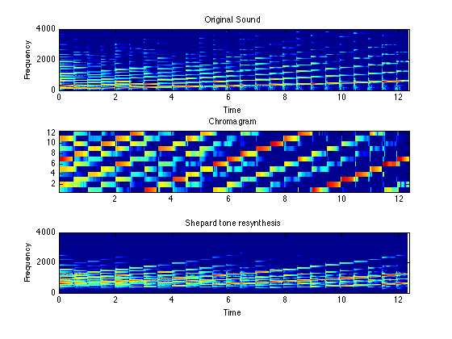

Chroma Feature Analysis and Synthesis
Chroma features are an interesting and powerful representation for music audio in which the entire spectrum is projected onto 12 bins representing the 12 distinct semitones (or chroma) of the musical octave. Since, in music, notes exactly one octave apart are perceived as particularly similar, knowing the distribution of chroma even without the absolute frequency (i.e. the original octave) can give useful musical information about the audio -- and may even reveal perceived musical similarity that is not apparent in the original spectra.
We provide several routines for calculating chroma representations from audio, as well as functions to do the reverse -- to synthesize audio from a chroma representation. Although mapping spectra to chroma loses information (since all octaves are mapped onto one another), it is still interesting to convert chroma back into an audio signal to hear a representation of what information has been preserved. We use "Shepard Tones", which consist of a mixture of all sinusoids carrying a particular chroma, for resynthesis.
Contents
Chroma Analysis
The main routine chromagram_IF operates much like a spectrogram, taking an audio input and generating a sequence of short-time chroma frames (as columns of the resulting matrix). chromagram_IF uses instantaneous frequency estimates from the spectrogram (extracted by ifgram.m, and pruned by ifptrack) to obtain high-resolution chroma profiles. (We also provide alternative implementations chromagram_E and chromagram_P, which use the simpler procedure of mapping each STFT bin directly to chroma, after selecting only spectral peaks in chromagram_P. The mapping matrix is constructed by fft2chromamx). Here, we read in a chromatic scale played on a piano and convert it to chroma:
% Read an audio waveform [d,sr] = wavread('piano-chrom.wav'); % Calculate the chroma matrix. Use a long FFT to discriminate % spectral lines as well as possible (2048 is the default value) cfftlen=2048; C = chromagram_IF(d,sr,fftlen); % The frame advance is always one quarter of the FFT length. Thus, % the columns of C are at timebase of fftlen/4/sr tt = [1:size(C,2)]*cfftlen/4/sr; % Plot spectrogram using a shorter window subplot(311) sfftlen = 512; specgram(d,sfftlen,sr); % Always use a 60 dB colormap range caxis(max(caxis)+[-60 0]) % .. and look only at the bottom 4 kHz of spectrum axis([0 length(d)/sr 0 4000]) title('Original Sound') % Now the chromagram, also on a dB magnitude scale subplot(312) imagesc(tt,[1:12],20*log10(C+eps)); axis xy caxis(max(caxis)+[-60 0]) title('Chromagram')
Chroma Synthesis
The chroma representation tells us the intensity of each of the 12 distinct musical chroma of the octave at each time frame. We can turn this back into an audio signal simply by using the 12 chroma values to modulate 12 sinusoids, tuned to cover one octave. However, that octave would be arbitrary, so instead, in chromasynth, we use each chroma value to modulate an ensemble of sinusoids, with frequencies that are related by powers of two, all of which share the same chroma. By applying a smooth rolloff to these sinusoids at high and low extremes of the spectrum, these tones carry chroma without a clear sense of octave. They are known as "Shepard Tones" for Roger Shepard, the Stanford psychologist who first investigated their perceptual properties. chromasynth.m relies on synthtrax to convert frequency/magnitude vector pairs into waveform.
% chromsynth takes a chroma matrix as the first argument, the % *period* (in seconds) corresponding to each time frame, and % the sampling rate for the waveform to be generated. x = chromsynth(C,cfftlen/4/sr,sr); % Plot this alongside the others to see how it differs subplot(313) specgram(x,sfftlen,sr); caxis(max(caxis)+[-60 0]) axis([0 length(d)/sr 0 4000]) title('Shepard tone resynthesis') % Of course, the main point is to listen to the resynthesis: soundsc(x,sr); wavwrite(x,sr,'piano-shepard.wav');
Download
You can download all the code and data for these examples here: chroma-ansyn.tgz.
Last updated: $Date: 2007/04/21 14:03:14 $ Dan Ellis dpwe@ee.columbia.edu